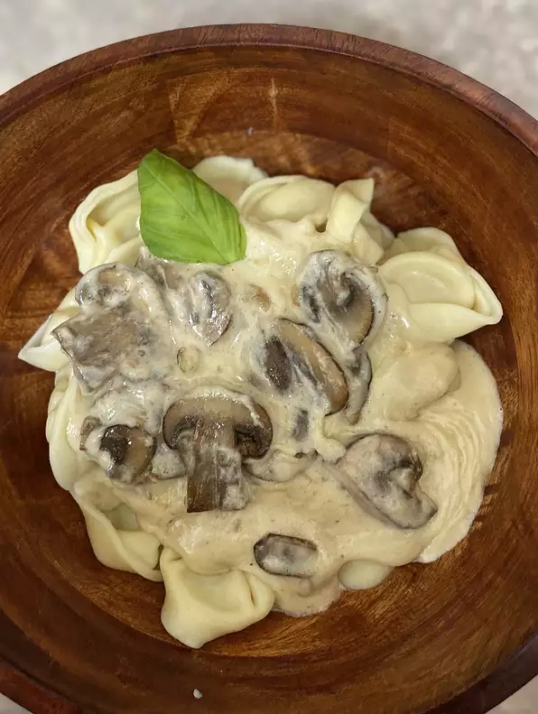

Mushroom Tortellini

This is the recipe for a Mushroom Tortellini
The best way to prepare mushroom tortellini with a few ingredients
Ingredients
- 1 (9 ounce) package refrigerated tortellini
- ½ cup sliced portobello mushrooms
- tablespoons butter
- Ground pepper to taste
- ½ cup evaporated fat-free milk
- ¾ cup freshly grated Parmesan cheese/li>
Steps
- Fill a large pot with lightly salted water and bring to a rolling boil; stir in tortellini and return to a boil. Cook uncovered, stirring occasionally, until the tortellini float to the top and the filling is hot, 2 to 3 minutes
- Melt butter in a skillet over medium-high heat. Add sliced mushrooms and saute until tender, about 5 minutes. Add garlic and cook until fragrant, about 30 seconds. Remove mixture to a small bowl.
- Add evaporated milk to skillet and heat over medium-low heat until warm. Stir in Parmesan cheese until melted. Add cooked tortellini and toss to coat. Garnish with mushroom-garlic mixture.